Element Types
The Graphics Editor provides a set of elements that allow you to import images, or create shapes that are grouped together and form the building blocks for creating symbols, complex graphics and Graphic templates. There are three types of elements that allow you to create interactive elements that can execute commands.
- Drawing Elements - Create a shape on the canvas and then format and configure the element’s numerous properties.
- Command Control Element - Create an element on the canvas that can be configured as a spin button, slider, rotator, drop-down menu, or a string, numeric, or password field. For an overview of this element, see Command Control Configuration.
- Importing Elements - Import image files.
The Properties View allows you to view and change the element properties
Element Types | ||
Item | Icon | Description |
Drawing |
| Animation |
| Ellipse | |
| Line | |
| Path | |
| Pipe | |
| Pipe Coupling | |
| Polygon | |
| Rectangle | |
| Text | |
Command Control |
| Command Control |
Import |
| Import Image File |
| Import AutoCAD and XML File | |


For an overview of each element, see the following:
Animation Element
Animation is the visualization of a change and can be used to show moving units, flashing lights, and rotating elements. The visualization of change is represented by displaying images, symbols, based on a data point’s state or value range. All element properties in the Graphics Editor can be configured for animation using the animation element.
The animation element, available from the Insert group, allows you to set the property evaluations that determine which images (symbol instances) will display based on the resulting state or value range of the animation element Symbol Reference property.
For example, you can create animated symbols to visually show the state of a fan:
- Display the Fan Stopped Symbol, when the fan speed = 0
- Display the Fan Rotation Slow when the fan speed = 1
- Display the Fan Rotation Fast when the fan speed = 2
Displaying the Animation Element
The following rules apply to value of the Symbol Reference property of an animation and how the animation element or symbol displays in Preview and Design mode:
- If the Symbol Reference property is empty:
- If there is no symbol reference evaluation – The default symbol icon
 displays.
displays. - If a symbol reference evaluation exists - Display the first non-empty symbol of the evaluations.
- If the symbol reference property is set - Display the associated symbol.
The following rules apply to the animation element symbol reference property and how the animation element or symbol displays in Test or Runtime mode, and in the Graphics Viewer:
- If there is no symbol reference evaluation:
- If the symbol reference property is empty - Show nothing.
- If the symbol reference property is set - Display this symbol.
- If a symbol reference evaluation exists:
- If the evaluation result is empty - Show nothing.
- If the evaluation result is a valid symbol – Display the resulting symbol.
- If the evaluation result is an invalid symbol – Display
#Ref
Size and Resizing
Resizing an animation element on the canvas affects all resulting symbol instance frames with the same factor. This is only important if the resulting frames have different sizes. For example, If an animation object is resized to half of its original size; all the resulting symbol instances will be half of their original size.
A symbol instance can also be resized. Based on the currently visible symbol instance, the resize factors for the Width and Height properties are used if and when the resulting visible symbol is updated due to changes in the symbol reference property.
Position
The position, as set by the X and Y properties, of a symbol instance does not change when the resulting symbol instance that is displayed on the canvas is updated due to changes in the Symbol Reference property, for example, after a data point COV.
The anchor is used to specify the logical origin of the symbol when it is displayed as an instance on the canvas. Every symbol has an associated anchor, which can be toggled to be visible or not in the Element Tree using the Visible check box. If the anchor is not visible, the top left corner of the bounding rectangle and all the symbol elements are used for positioning.
Animation Matrix
Any data point type can be used to create an expression for animating an element’s property. The relationship between the data point type and the element property type are generally converted to the target element type.
The table below represents the animation matrix and conversions possible between data point type and element property types.
Property Type:
Data Point Type: | Double Eg. Angle | String Eg. Text | Boole Eg. Blinking | CompoundBrush Eg. BackColor | Sint32 Eg. Precision | ENUM Eg. Ellipse Type |
UInt8 (char, byte) | X | X | X | X | X | X |
UINT32 (UInt, bit32) | X | X | X | X | X | X |
SInt32 (Int) | X | X | X | X | X | X |
Double (Float) | X | X | X | X | X | X |
Bool1 | X | X | X | X | X | X |
String | X | X | X | X | X | X |
DateTime2 | X | X | X | X | X | X |
Dpld | NA | X | NA | NA | NA | NA |
LangText | NA | X | NA | NA | NA | NA |
Blob | NA | X | NA | NA | NA | NA |
1) | O or an empty value is set to False and Black. Any other value is set to True and White. |
2) | Based on the number of seconds since 12:00:00 midnight, January 1st, 0001 for the date/time value. For example, May 5, 2010, 3 PM, is represented by the value: 63408495600 |
Ellipse Element
The ellipse element allows you to draw an ellipse, arc, or pie. An ellipse is an elongated circle and has a closed curve. An arc is a part of the ellipse curvature, while a pie is an arc with the ends connected by a straight line to the center of the imaginary ellipse.
Import .XML Element
The import .XML image element allows you to insert an .XML image file onto the canvas. .XML images can be stretched and clipped.
The following .XML file types are supported and can be imported to the Graphics Editor:
- .XAML
- .XPS
- .DWFX
An image element has the following handles attached to it:
- Selection and Resizing (open\closed)
- Rotational
Import AutoCAD and XML Element
Import AutoCAD Image Element  allows you to insert and modify 2D AutoCAD files. You can also import XPS and XAML files. When you choose to import a DWFx, XAML, or XPS file, the drawing displays on the open canvas.
allows you to insert and modify 2D AutoCAD files. You can also import XPS and XAML files. When you choose to import a DWFx, XAML, or XPS file, the drawing displays on the open canvas.

NOTE:
Importing of 2D DWFx files is supported on installed clients, as well as from the management station Web Server and Remote Server clients. However, AutoCAD conversion of 2D DWG and DXF drawings are only possible on installed clients; conversion is not possible from the management station Web Server and Remote Server clients.
When you import a 2D DWG or DXF drawing the AutoCAD Importer windows displays. Here you can customize the drawing before it is converted and placed on the active canvas as an XPS element.
NOTE: Once you have converted an AutoCAD drawing and imported the converted file, the original file is no longer required. You will continue to work with the converted, imported file. You can, however, save the original as a back-up file.
The following properties of an imported file can be modified; otherwise, the content of an imported AutoCAD file cannot be changed by the Graphics Editor:
- Position
- Size
- Rotation
- Background color
Import Image File Element
The import image element allows you to insert any of the following graphic file types onto the canvas:
- BMP
- JPG
- TIFF, TIF
- PNG
Once an image file is inserted onto the canvas, the following properties of the image can be modified:
- Position
- Size
- Rotation
- Background color
- Clip
NOTE:
You can also import images directly via the clipboard. For example, a screen capture obtained by pressing the PRINT SCREEN key, can be inserted on the canvas using Paste elements can be stretched and clipped.
Line Element
The line element allows you to draw a line segment between two points---a start and end handle--on the canvas. A line also contains a mid-segment point, which can be used to convert the line to a path element or to create polylines. Each segment can be extended, shortened, split, and moved.
The line element consists of the following handles:
- Selection and resizing
- Rotational
- Start and end
Path Element
The path element allows you to draw a series of connected line and curve sections, consisting of segments that can be manipulated in multiple ways to form any number of shapes.
The following segment options are available when working with a path element section:
- Line –The line section can be moved around, and it can be extended. The default option when you initially draw a path element on the canvas.
- Cubic Bezier – Has two segments that can be moved in any direction.
- Quadratic Bezier – Has one segment that can be moved in any direction.
- A path element can also contain one or more path figures, when selected from menu that displays when pressing the right mouse button. These elements are path elements within a path that have their own control handles, including a start and end handle.
Path Handles and Functionality | ||
Icon | Handle Names | Description |
Start Handle | Marks the beginning of a line or path segment. | |
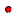 | End Handle | Marks the end of a line or path segment. |
Mid-Segment | Allows you to select what path type should be applied to the segment. | |
Example path, a heart-shape, consisting of a figure with the path element.
Pipe Element
The pipe element  allows you to draw a series of pipes to represent structures consisting of some type of pipes. The pipe element and the pipe coupling elements are used together to create angel’s, bends, and intersections.
allows you to draw a series of pipes to represent structures consisting of some type of pipes. The pipe element and the pipe coupling elements are used together to create angel’s, bends, and intersections.
Evaluations and Display Properties
There are certain display properties for the pipe element, for example: Fill, Brushes, Height, Width, etc. that cannot be dynamically changed with an expression.
NOTE: When working with Symbols that contain pipe elements, if a Symbol is not the correct dimensions or size, you should rescale the Symbol to maintain the piping aspect ratio, rather than resizing it.
The diagram below consists of one pipe element overlaid with a pipe coupling element.
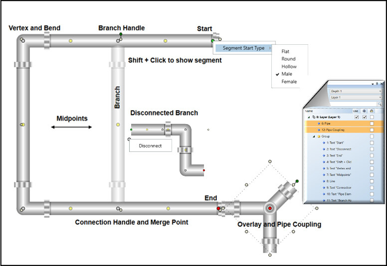
Term | Description |
Bend | A bend is created when you extend a Start or End handle. A bend also initiates a Vertex handle. You have two options when creating a bend:
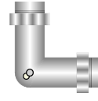 NOTE: The graduation of an acute angle may display differently on the installed and the Flex client. |
Branch | An extension of a pipe element segment created by clicking-and-dragging a Midpoint handle. 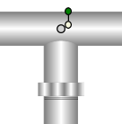 A branch handle can only have one branch. A disconnected branch, is still a segment of the pipe element it was disconnected from. |
Merge | Joining two or more segments or pipe elements to create a single element. A merge only occurs when you press CTRL+Q and drag a segment’s start or end handle to another segment or pipe element. 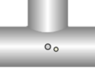 The following are not possible to merge:
|
Segment | A section of a pipe element that has a start and end handle or when you create a branch.
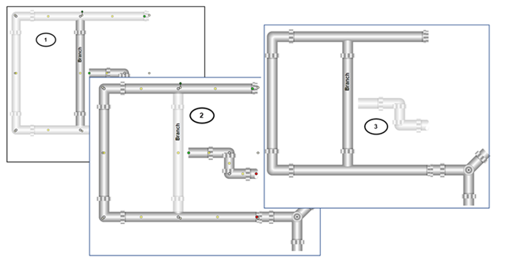 |
Overlay | Pipe and a Pipe Coupling element are overlaid to give the appearance of being merged. Combine this with the Group feature to maintain the relative positions. An individual Pipe element can still be formatted independently by selecting it from the Group in the Element Tree. 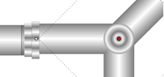 |
Pipe Element Handles
In addition to the usual element handles, there are six handles specific to the pipe element that you can click + drag, or right-click to create your pipe elements.
A descriptive tooltip with keyboard shortcuts displays on the canvas when you hover over a handle for 5 seconds.
Pipe Handles and Functionality | ||
Icon | Handle Names | Description |
Start | Marks the beginning of a pipe element or a disconnected branch/ segment. You can: Extend or move the start of a pipe element or branch/segment. | |
End | Marks the end of a pipe segment. Extend or move the start of a pipe element. You can: Extend or move the end of a pipe element or branch/segment. | |
Midpoint | Marks the center of two segments. You can: Drag to extend and create a branch. | |
Branch | Marks the beginning of a branch. You can:
| |
Connection | Marks the point where two segments merge. You can:
| |
Vertex | The center of a bend in a segment. You can:
| |
Pipe Coupling Element
This element represents pipe coupling objects which allow you to join two or more pipe ends. The element is used in conjunction with the pipe element for recreating piping diagrams, wireframes, or blueprints.
NOTE: When working with Symbols that contain pipe coupling elements, if a Symbol is not the correct dimensions or size, you should rescale the Symbol to maintain the piping aspect ratio, rather than resizing it.
The pipe coupling  has two properties you can set from the Pipe Coupling Properties view:
has two properties you can set from the Pipe Coupling Properties view:
- Auto Pipe Joint – If enabled, the pipe joints display as you draw the pipe coupling. This property is disabled by default.
- Diameter – Sets the pipe coupling diameter. The minimum diameter allowed is: 4.
When you draw a pipe coupling element on the canvas, select from one of five connector types by clicking on the red selector button when the element is selected. Used in conjunction with the element rotation handles and the Layout properties (Flip X and Flip Y) all positions are achievable.
The five connector types are:
- Cross-connector (default)
- Perpendicular connector
- Angular connector
- Y-connector
- Straight connector
Evaluations and Display Properties
There are certain display properties for the pipe element, for example: Fill, Brushes, Height, Width, etc. that cannot be dynamically changed with an expression.
Cross-Connector (Default)
When you draw the pipe coupling on the canvas, the default connector types is the cross. Below is an example of the cross-connector pipe coupling with the addition of the joints added.
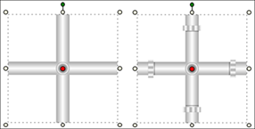
Perpendicular Connector
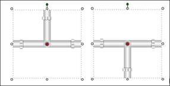
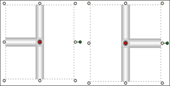
Angular Connector
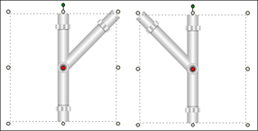
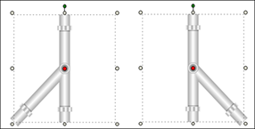
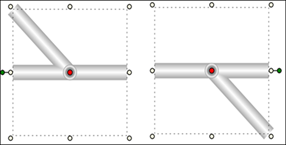
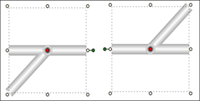
Y-Connector
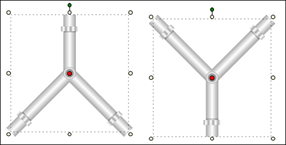
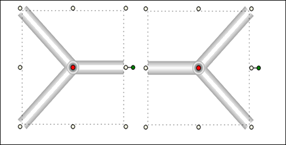
Straight Connector
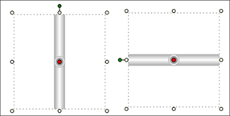
Polygon Element
The polygon element consists of one closed figure with three or more line segments.
Example of a 5-corner polygon element, which is a pentagon:
A polygon element with no corner offset
A polygon element with the corner offset set to 30
Rectangle Element
The rectangle element allows you to create rectangles and squares on a graphic canvas. The element has two properties that are used to modify the curvature of the rectangle edge. The default value of these properties, Radius X and Radius Y, is 0 which results in two intersecting lines as seen in a rectangle or square.
NOTE: All corners of the rectangle are adjusted simultaneously; you cannot adjust them individually.
The rectangle element has the following handles attached to it:
- Selection and Resizing
- Rotational
- Cornering Radius
Text Element
Text elements are drawing elements that allow you to add alpha-numeric text to a graphic, or add a translatable text label. Line breaks (CTRL+ENTER) and tabbing (TAB key) are supported within a text element. You can apply formatting to the text elements from the Home tab, using the Format group options.
Formatting properties include properties such as font family, size, and horizontal alignment, etc., and numerical formatting such as engineering units to display along with the values, Min, Max, and Precision properties.
The text element, also allows you to display a data point's object references, such as Name, Description, and Alias, by selecting Short Reference, Long Reference, or Alias from the Text Type property. To view the text references on the canvas in Runtime mode, you have to drag the data point onto the Evaluations Editor expression and then manually enclose the data point reference in double quotes ("").
You can also create a translated text label, which allows you to create a text element on your graphic whose text displays according to the language settings for the current user logged.
Text elements can also display a corresponding icon according to the active state or value of a data point property.
Advanced text formatting and settings can be applied via the Properties view.
Font Family and Size
You can easily apply a font and font size to your text element from the Format group.
Vertical and Horizontal Text Alignment
You can determine how the actual text is aligned or set in the element’s bounding rectangle. You can adjust the vertical and the horizontal alignment of text. These selections are available via the Format group.
Standard Formatting
Standard formatting such as bolding, italicizing, underlining, and applying strikethrough are quickly done from the Format group. You can apply one or more of these options to the content; however, when selected, the formatting is applied to the entire block of text in the element. You cannot select individual letters or numbers for formatting.
Wrapping and Trimming Text
The Wrapping and Trimming properties are set in the Properties View. These properties allow you to work with how the text displays within the viewable bounding rectangle.
The Trimming property allows you to set text that is outside of the view of the bounding rectangle to either display the last viewable character, Character ellipsis, or to see the last visible word, Word ellipsis within the elements bounding rectangle followed by an ellipsis (…).
NOTE: If the text contains any of the following special characters (“/”, “%”, or “!”) you must enter a space before and after each special character in order for the trimming to work properly.
The Wrapping property allows you to apply wrapping to the content of the text element, so that the entire content is visible within the bounding rectangle. There are three options to choose for this property.
- No Wrap -The text will continue on the same line, without regard for the bounding rectangle. If the text exceeds the viewable boundaries of the element, horizontal scrollbars display allowing you to scroll through the text. This is the default Wrapping property.
- Wrap – This option automatically wraps the text within the bounding rectangles. The text wraps as soon as the first character exceeds the boundary.
- Wrap with Overflow – This option does not separate words, but rather wraps the word to the next line if it exceeds the boundary. When the Auto Size property is set to size according to width or height, the Wrap with Overflow property is overridden and the Wrapping property is ignored.
Working with Short, Long, and Alias Text Type References
The Short, Long, and Alias Text Type options allow you to add dynamic data point references to a graphic. A dynamic reference is basically the name and\or description of the data point displayed according to the format selected in the System Browser Display Mode list box. The Alias is also taken from the data point reference information. A data point will always have a name and a description associated with it. However, a data point only has an Alias if it was configured that way.
If you have selected one of the text types, you must then drag the data point over the Expression field in the Evaluation Editor and enclose the path in quotation marks (" ") so that the path is evaluated as a string (text) and not as an object (monitored value).
Displaying the data point reference is slightly different from displaying the data point value:
- Invalid references (for example, non-existent data points) will show #FORMAT instead of #COM
- Changing the display options in the System Browser automatically updates the references of all text elements. Any other animation also updates the text elements.
Working with Tags
Tags are a text element with variable content. Each tag name serves as a key whose value is displayed within the graphic. Tags are included within text element and linked to their corresponding objects by means of an object reference. Create the tag in the Object Configurator before linking to it within the graphics editor.
Working with Numbers: Precision, Decimal Offset, and Units
Text elements that contain numbers (for example, values of data points can use the three Text properties that are specifically intended for formatting numbers: The Precision property allows you to specifically set the maximum number of digits allowed for numeric data types. The higher the precision value entered, the more decimal places display. Negative precision rounds the value to the left of the decimal to the nearest to the nearest default precision is set to 2. This property shows 0 for non-numeric data types. With the Decimal Offset property, you can vertically align numbers by decimal point. The property is set by entering a value that specifies the distance in pixels from the elements X position to the decimal delimiter position. The default value is set to empty or zero; the decimal delimiter is at the elements X coordinate.
The Unit property, is optional, and allows you to specify an engineering unit to append to the value. If the property is left empty, the units of the last data point in the text expression are used.
Resizing Fonts
The Graphics Editor provides several methods to resize text contained in the text element. Once you have selected a font size for the text the options for resizing are as follows:
- Increase Font size and Decrease Font Size Buttons -- (Format group only). These buttons allow you to automatically increase or decrease the font size of the active element by one point with each click of the mouse.
- Resize Fonts Button -- (Format group only). If this button is enabled, you can set the content of the text element to maintain the aspect ratio whenever the size of the text element changes. This means if the element is enlarged, the text content will increase to the actual size of the element proportionately.
- Auto Size Property – (Properties view only). This property allows you to resize the content of the text element to adjust according to height or width. The default setting is not set to resize. When this property is enabled, it overrides the wrapping property.
Related Topics
- Animation Element
For related procedures, see Configuring the Animation Element .
- Ellipse Element
For related procedures, see Drawing an Ellipse, Arc, or Pie Shape
- Command Control Element
For related workflow and procedures, see
- Import AutoCAD, .XML and Image File Element
For workspace overview, see AutoCAD Importer
For related procedures, see Importing Graphics Files.
- Line Element
For related procedures, see Drawing a Line Element.
- Locking and Unlocking Elements
For related procedures, see Lock and Unlock an Element on a Canvas.
- Notes on Resizing Elements
For related procedures, see Resize Elements.
- Path Element
For related procedures, see Drawing a Path Element.
- Polygon Element
For related procedures, see Drawing a Polygon Element .
- Rectangle Element
For related procedures, see Drawing a Rectangle Element .
- Text Element
For related procedures, see Adding Text Elements, Labels and Tooltips to a Graphic.